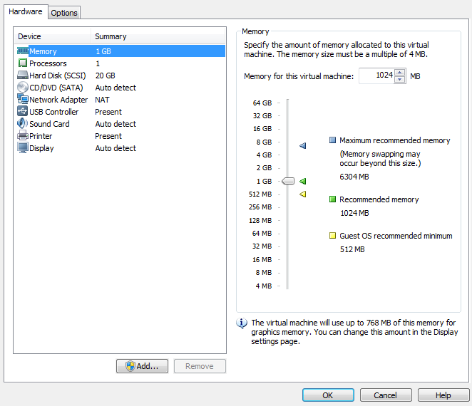
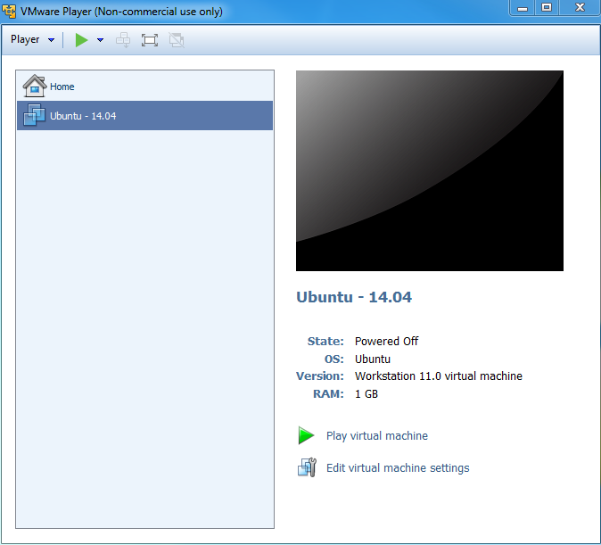
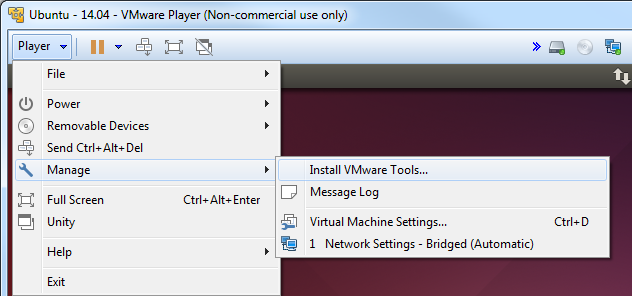
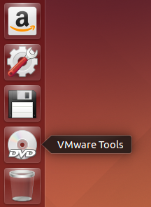

4.1.14. How to Build a Ubuntu Linux host under VMware¶
Warning
This content is no longer maintained. It has been left here in case it can help someone, but it will not be maintained and will eventually move out of date. If you choose to use a Virtual Machine to host your development version of Linux on a PC, the VM provider will provide up to date information that is better and more complete than what we’ve provided here.
Introduction
This guide demonstrates how to get a virtual Ubuntu Linux machine running with VMware under Windows 7. Please use only the 32-bit Ubuntu 14.04 release as this is what is called an LTS (Long Term Support). There are SDK scripts that will be checking for this release identity.
Requirements:
- Windows 7 host with internet connection, at least 1G of RAM and 40G of free hard drive space.
The instructions here are for setting up a 40G virtual machine. The entire 40G is not taken at once, but as the machine is used and software is installed, the machine can grow and take up as much as 40G.
Download the Ubuntu 14.04 LTS ISO image
Get the Ubuntu 14.04 LTS CD ISO image from: http://releases.ubuntu.com/14.04/. Select PC (Intel x86) desktop CD under the Desktop CD section.
Click download and the follow instructions to download and save the ISO image somewhere. Remember where you save this - you will need the ISO soon!(CD image).
Download VMware and install
Get VMware from: http://www.vmware.com
Vmware Player is a free download from the website and enables the user to create an entire virtual machine from scratch using just the ISO image downloaded from Ubuntu. It is necessary to sign up for an account at VMware in order to get to the download areas. The general steps to getting VMware are as follows:
- Login to the vmware website
- Select VMware Player from the products menu
- Follow the steps to download VMware Player
NOTE - We have tested with v7.0.0 with no known issues. As of Feburary, 2015, v7.0.0 is the latest version.
- Run the executable to install VMware
- Accept license and all default settings.
Create a New Virtual Machine with VMware
Before starting a new installation it is assumed that the Windows host has a proper internet connection to a DHCP server and that the Windows host has enough hard drive space for the new virtual machine.
The following steps are performed with VMware 7.0.0. The exact steps with other versions may vary slightly
- Start VMware.
- From the File menu select “Create a New Virtual Machine…”
- Choose to install the operating system later. Click “Next”.
- Select Linux as the “Guest Operating System” and then choose Ubuntu as the “Version”. Click “next”.
- Provide a “Virtual machine name” and “Location” where the machine will be stored on the Windows host. The defaults are fine here. Click “Next”.
- For “Maximum disk size (GB)” it is good to start with 40G if possible. This means that it will take up 40G on the Windows host. Make sure that the Windows host has at least this much before proceeding. It is also a good practice to tell VMware to split the virtual disk into 2G files. This will makes the image easier to copy and transport if necessary. Click “Next”.
- Click “Finish” to complete the creation of the virtual machine.
The machine name will now be listed under the home page of VMware. It is necessary to modify some machine settings before playing the machine for the first time. Select the machine in the home page and then click on “Edit virtual machine settings” on the right.
Click on CD/DVD and change the connection to “Use ISO image file”. Click on “Browse…” and select the Ubuntu ISO image file that was previously downloaded. Click on Network Adapter and change the Network connection to “Bridged” and then check the box to “Replicate physical network connection state”.
Adding a serial port to the virtual machine
If you plan to use a serial terminal application, a serial port must be added to the virtual machine. This port must be a physical serial port which exists on the host PC. Click on “Add…” and select “Serial Port”. Click “Next”. Choose “Use physical serial port on host”. Click “Next”. Click Finish. Click “Ok”.
Since this is a physical port on the host PC, it cannot be used by the host PC and the virtual machine at the same time. When the virtual machine is started, the serial port will be unavailable for use by the host PC. If the serial port is being used at the time that the virtual machine is started, the virtual machine will not be able to access the serial port after it is booted up. So if you want the virtual machine to gain control of the physical serial port of the host PC, there can not be any application like hyperterminal or teraterm running on the host PC at the time that the virtual machine is started.
Further instructions for using the serial port with minicom inside of Ubuntu are here.
Now click on “Play virtual machine”. Since this is the first time starting the machine and the Ubuntu ISO image is in the virtual CD drive, the Ubuntu OS will install itself in the virtual machine.
Click through the Ubuntu installation, making the appropriate choices as you go. This will help with SDK installation scripts.
After the machine reboots into Ubuntu it is helpful to take the Ubuntu ISO out of the virtual CD drive. Click on the VM menu and select “Settings…”. Click on CD/DVD and change the connection from “Use ISO image file” to “Use physical drive”. The actual drive letter can be selected from the drop down list. If there is no physical drive on the host machine, the CD/DVD device can be simply removed from the machine.
Install VMware Tools
VMware tools is a very useful addition to VMware. It allows you to resize the VMware screen ,cut-and-paste of text and drag and drop files from the Ubuntu machine to and from the Windows host.
Within the virtual machine window click the Player -> Manage -> Install VMware Tools
The VMware tools are contained in an ISO image that VMware will automatically mount. This drive will show up on the Ubuntu desktop as if it were a disk in a DVD drive.
There will be a single tarball on the drive named VMwareTools-9.9.0-2304977.tar.gz (or with a slightly different version number). Extract the tarball somewhere in your /home/<user> directory. You will see that a vmware-tools-distrib folder was created and a file name vmware-install.pl inside. Execute vmware-install.pl to install VMware Tools. The Perl script must be executed as a super-user. This is done in Ubuntu by pre-pending the command with “sudo”. When prompted for a password, enter the password for the user account. In Ubuntu, there is no “root” account. However, the first user account created when Ubuntu is installed can become a super-user with the “sudo” command. Select all of defaults during installation of VMware Tools.
An example is shown below.
sitara@sitara-virtual-machine:~$ cd
sitara@sitara-virtual-machine:~$ tar -xzvf /media/sitara/VMware\ Tools/VMwareTools-9.9.0-2304977.tar.gz
sitara@sitara-virtual-machine:~$ sudo ./vmware-tools-distrib/vmware-install.pl
Confirming a Valid Network Connection
After logging into the machine for the first time, bring up a terminal window. This can be found under the Applications menu in Ubuntu. Applications –> Accessories –> Terminal. Type pwd in this terminal. This should return /home/<user>. Now type ifconfig. This should return information about the network connection. Under eth0 the IP address should be similar (but not the same) as the IP address owned by the Windows host.
sitara@sitara-virtual-machine:~$ ifconfig
eth0 Link encap:Ethernet HWaddr 00:0c:29:da:a8:6e
inet addr:128.247.107.65 Bcast:128.247.107.255 Mask:255.255.254.0
inet6 addr: fe80::20c:29ff:feda:a86e/64 Scope:Link
UP BROADCAST RUNNING MULTICAST MTU:1500 Metric:1
RX packets:759 errors:0 dropped:0 overruns:0 frame:0
TX packets:32 errors:0 dropped:0 overruns:0 carrier:0
collisions:0 txqueuelen:1000
RX bytes:62873 (62.8 KB) TX bytes:4937 (4.9 KB)
Interrupt:19 Base address:0x2024
lo Link encap:Local Loopback
inet addr:127.0.0.1 Mask:255.0.0.0
inet6 addr: ::1/128 Scope:Host
UP LOOPBACK RUNNING MTU:16436 Metric:1
RX packets:12 errors:0 dropped:0 overruns:0 frame:0
TX packets:12 errors:0 dropped:0 overruns:0 carrier:0
collisions:0 txqueuelen:0
RX bytes:720 (720.0 B) TX bytes:720 (720.0 B)
How to Read a USB SD Card Reader in VMware